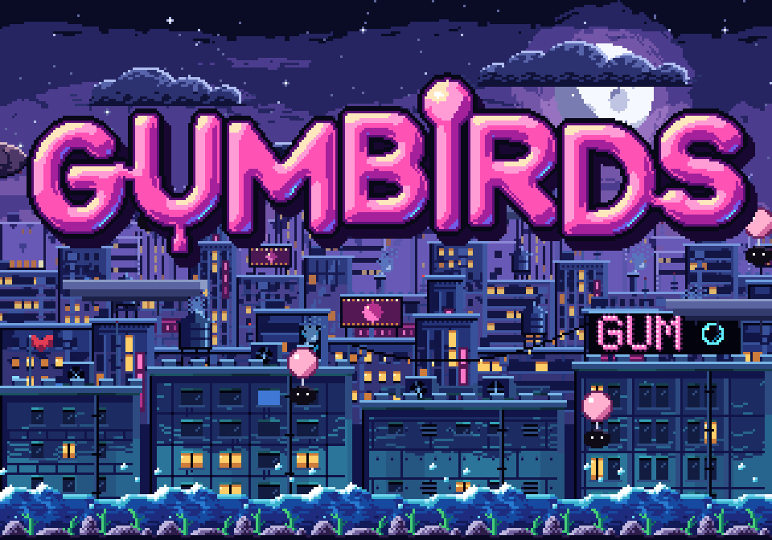
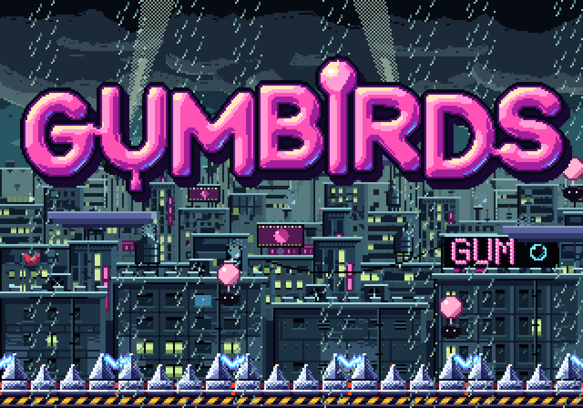
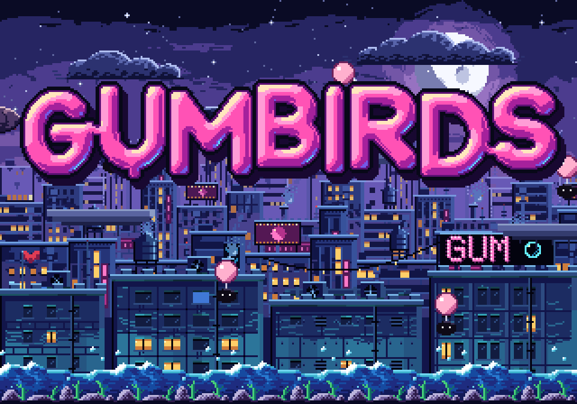
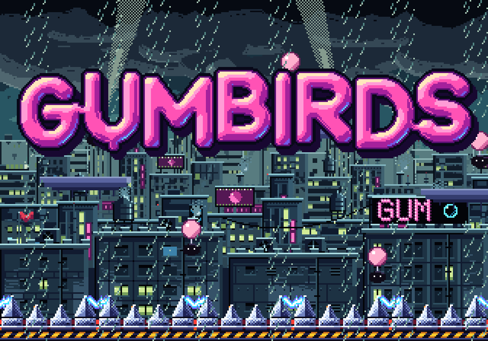

Sky: camera 0 crop of the wide-background camera sheet (includes its islands, fliers and hazard strip). Logo: accepted still at its title position. Contrast = WCAG ratio, logo outer ring vs the sky pixel just outside. Second row: widest frame of the 10-frame animation.

edge pixels 884, edge/sky pairs 1236
contrast edge vs sky outside: mean 3.00, min 1.01 (per pair), mean per edge pixel 3.01
edge pixels under 1.5: 11.7% under 1.2: 4.6%
sky colour that collides most: (np.uint8(38), np.uint8(37), np.uint8(98)) (71 pairs under 1.5; of 189 such pairs)
edge pixels 884, edge/sky pairs 1236
contrast edge vs sky outside: mean 3.77, min 1.01 (per pair), mean per edge pixel 3.77
edge pixels under 1.5: 3.2% under 1.2: 1.0%
sky colour that collides most: (np.uint8(70), np.uint8(24), np.uint8(84)) (11 pairs under 1.5; of 50 such pairs)

edge pixels 884, edge/sky pairs 1236
contrast edge vs sky outside: mean 3.03, min 1.01 (per pair), mean per edge pixel 3.03
edge pixels under 1.5: 17.9% under 1.2: 3.6%
sky colour that collides most: (np.uint8(28), np.uint8(41), np.uint8(56)) (103 pairs under 1.5; of 276 such pairs)

edge pixels 853, edge/sky pairs 1188
contrast edge vs sky outside: mean 3.10, min 1.01 (per pair), mean per edge pixel 3.11
edge pixels under 1.5: 10.1% under 1.2: 4.7%
sky colour that collides most: (np.uint8(38), np.uint8(37), np.uint8(98)) (39 pairs under 1.5; of 154 such pairs)
edge pixels 853, edge/sky pairs 1188
contrast edge vs sky outside: mean 3.85, min 1.01 (per pair), mean per edge pixel 3.84
edge pixels under 1.5: 3.2% under 1.2: 1.1%
sky colour that collides most: (np.uint8(70), np.uint8(24), np.uint8(84)) (11 pairs under 1.5; of 47 such pairs)

edge pixels 853, edge/sky pairs 1188
contrast edge vs sky outside: mean 3.11, min 1.01 (per pair), mean per edge pixel 3.11
edge pixels under 1.5: 16.5% under 1.2: 3.6%
sky colour that collides most: (np.uint8(28), np.uint8(41), np.uint8(56)) (74 pairs under 1.5; of 244 such pairs)